Every question from the final-term practice sheet, with an exam-style worked solution
How to use this page. Each question is a screenshot taken straight from the practice sheet. Try it on paper first, then open its solution.
Jump to: CSP · Probability · Bayes' nets · Naive Bayes · Decision trees · Markov models
Convention used in every CSP answer (the same one as the sheet's own sample solution): forward checking after each assignment; MRV picks the variable with the fewest remaining values; a tie is broken by the degree heuristic (most constraints on unassigned variables); LCV picks the value that rules out the fewest values in neighbouring domains; a remaining tie takes the first option (Red, Green, Blue order), unless the question gives its own tie rule.
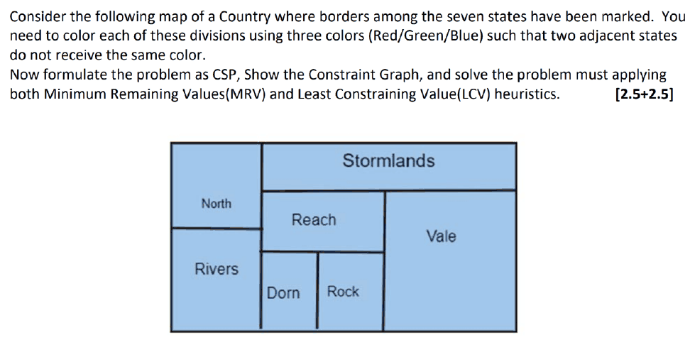
Reach borders all six other states (degree 6); every other state has degree 3.
Trace (forward checking after every assignment; assigned values in bold):
| Step | North | Rivers | Stormlands | Reach | Vale | Dorn | Rock |
|---|---|---|---|---|---|---|---|
| Initial | R, G, B | R, G, B | R, G, B | R, G, B | R, G, B | R, G, B | R, G, B |
| 1. Reach = R | G, B | G, B | G, B | R | G, B | G, B | G, B |
| 2. North = G | G | B | B | R | G, B | G, B | G, B |
| 3. Rivers = B | G | B | B | R | G, B | G | G, B |
| 4. Stormlands = B | G | B | B | R | G | G | G, B |
| 5. Vale = G | G | B | B | R | G | G | B |
| 6. Dorn = G | G | B | B | R | G | G | B |
| 7. Rock = B | G | B | B | R | G | G | B |
✓ Every constraint holds: the six outer states form a ring North–Rivers–Dorn–Rock–Vale–Stormlands–North, which alternates Green/Blue, and Reach (Red) sits inside it.
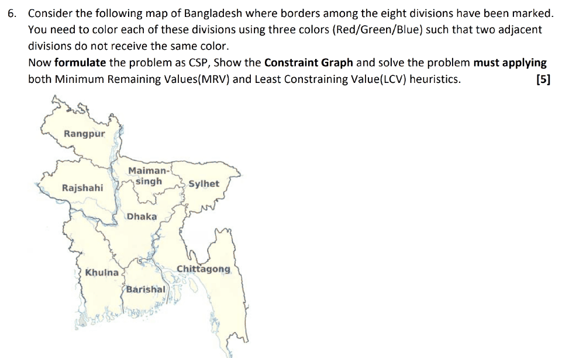
Degrees: Dhaka 6; Rajshahi, Mymensingh 4; Sylhet, Khulna, Barishal, Chittagong 3; Rangpur 2.
Trace (forward checking after every assignment; assigned values in bold):
| Step | Rangpur | Rajshahi | Mymensingh | Sylhet | Dhaka | Khulna | Barishal | Chittagong |
|---|---|---|---|---|---|---|---|---|
| Initial | R, G, B | R, G, B | R, G, B | R, G, B | R, G, B | R, G, B | R, G, B | R, G, B |
| 1. Dhaka = R | R, G, B | G, B | G, B | G, B | R | G, B | G, B | G, B |
| 2. Rajshahi = G | R, B | G | B | G, B | R | B | G, B | G, B |
| 3. Mymensingh = B | R | G | B | G | R | B | G, B | G, B |
| 4. Sylhet = G | R | G | B | G | R | B | G, B | B |
| 5. Khulna = B | R | G | B | G | R | B | G | B |
| 6. Barishal = G | R | G | B | G | R | B | G | B |
| 7. Rangpur = R | R | G | B | G | R | B | G | B |
| 8. Chittagong = B | R | G | B | G | R | B | G | B |
✓ Draw the constraint graph from the map first and state the borders you used — e.g. Rangpur–Mymensingh and Barishal–Chittagong meet only along rivers, so write them down explicitly.
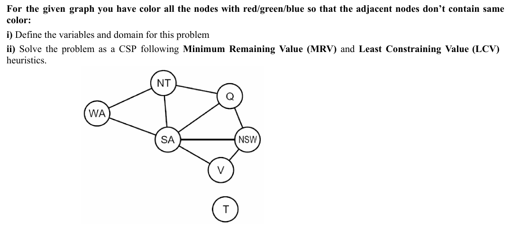
Trace (forward checking after every assignment; assigned values in bold):
| Step | WA | NT | Q | NSW | V | SA | T |
|---|---|---|---|---|---|---|---|
| Initial | R, G, B | R, G, B | R, G, B | R, G, B | R, G, B | R, G, B | R, G, B |
| 1. SA = R | G, B | G, B | G, B | G, B | G, B | R | R, G, B |
| 2. NT = G | B | G | B | G, B | G, B | R | R, G, B |
| 3. Q = B | B | G | B | G | G, B | R | R, G, B |
| 4. NSW = G | B | G | B | G | B | R | R, G, B |
| 5. WA = B | B | G | B | G | B | R | R, G, B |
| 6. V = B | B | G | B | G | B | R | R, G, B |
| 7. T = R | B | G | B | G | B | R | R |
✓ This reproduces the sample solution printed on the sheet step for step. T has no constraints, so any colour works for it.
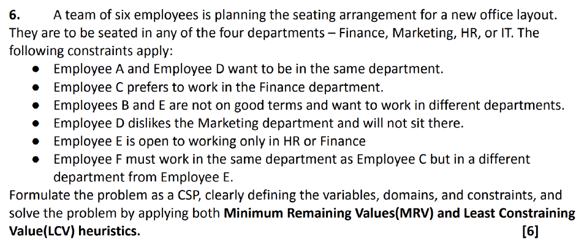
Apply the unary constraints first (node consistency): C ∈ {Fin}, D ∈ {Fin, HR, IT}, E ∈ {Fin, HR}.
Trace (forward checking after every assignment; assigned values in bold):
| Step | A | B | C | D | E | F |
|---|---|---|---|---|---|---|
| Initial | Fin, Mkt, HR, IT | Fin, Mkt, HR, IT | Fin | Fin, HR, IT | Fin, HR | Fin, Mkt, HR, IT |
| 1. C = Fin | Fin, Mkt, HR, IT | Fin, Mkt, HR, IT | Fin | Fin, HR, IT | Fin, HR | Fin |
| 2. F = Fin | Fin, Mkt, HR, IT | Fin, Mkt, HR, IT | Fin | Fin, HR, IT | HR | Fin |
| 3. E = HR | Fin, Mkt, HR, IT | Fin, Mkt, IT | Fin | Fin, HR, IT | HR | Fin |
| 4. D = Fin | Fin | Fin, Mkt, IT | Fin | Fin | HR | Fin |
| 5. A = Fin | Fin | Fin, Mkt, IT | Fin | Fin | HR | Fin |
| 6. B = Fin | Fin | Fin | Fin | Fin | HR | Fin |
✓ "C prefers Finance" is treated as a hard constraint, as the question intends. B and D still had several legal values; Finance was taken as the first value in the domain order because LCV scored them equally. Any choice of B ∈ {Fin, Mkt, IT} and D = A ∈ {Fin, HR, IT} is also correct.
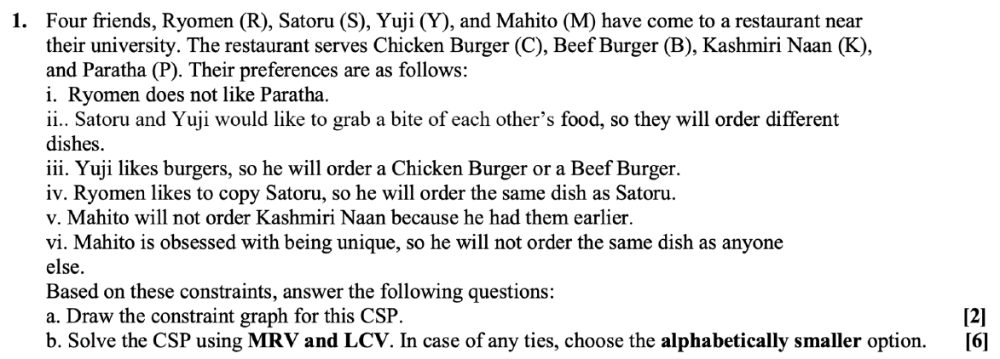
Unary constraints first: R ∈ {B, C, K}, Y ∈ {B, C}, M ∈ {B, C, P}, S ∈ {B, C, K, P}.
Trace (forward checking after every assignment; assigned values in bold):
| Step | M | R | S | Y |
|---|---|---|---|---|
| Initial | B, C, P | B, C, K | B, C, K, P | B, C |
| 1. Y = B | C, P | B, C, K | C, K, P | B |
| 2. M = P | P | B, C, K | C, K | B |
| 3. S = C | P | C | C | B |
| 4. R = C | P | C | C | B |
✓ Check: R ≠ P ✓, S ≠ Y (C ≠ B) ✓, Y is a burger ✓, R = S ✓, M ≠ K ✓, M (P) differs from everyone ✓.
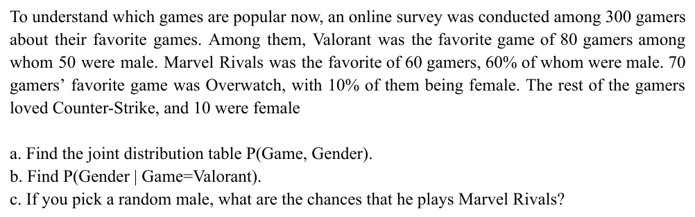
First turn every sentence into counts:
Divide each count by 300:
| Game | Gender | Count | P(Game, Gender) |
|---|---|---|---|
| Valorant | Male | 50 | 50/300 = 0.1667 |
| Valorant | Female | 30 | 30/300 = 0.1000 |
| Marvel Rivals | Male | 36 | 36/300 = 0.1200 |
| Marvel Rivals | Female | 24 | 24/300 = 0.0800 |
| Overwatch | Male | 63 | 63/300 = 0.2100 |
| Overwatch | Female | 7 | 7/300 = 0.0233 |
| Counter-Strike | Male | 80 | 80/300 = 0.2667 |
| Counter-Strike | Female | 10 | 10/300 = 0.0333 |
| Total | 300 | 1.0000 |
Total males = 50 + 36 + 63 + 80 = 229.
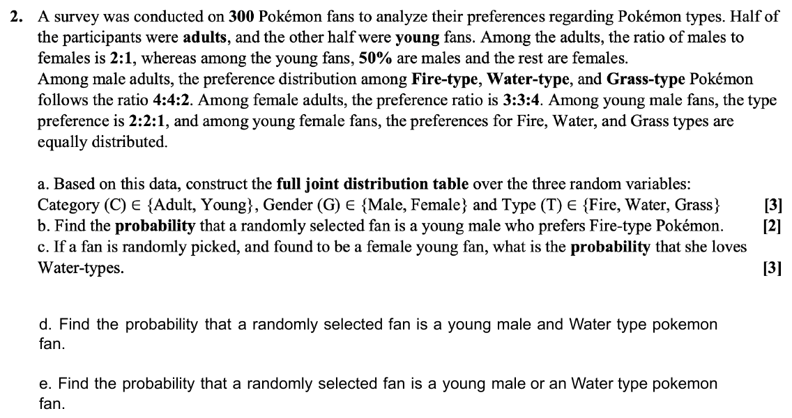
Break 300 down level by level:
| Category | Gender | Type | Count | P |
|---|---|---|---|---|
| Adult | Male | Fire | 40 | 0.1333 |
| Adult | Male | Water | 40 | 0.1333 |
| Adult | Male | Grass | 20 | 0.0667 |
| Adult | Female | Fire | 15 | 0.0500 |
| Adult | Female | Water | 15 | 0.0500 |
| Adult | Female | Grass | 20 | 0.0667 |
| Young | Male | Fire | 30 | 0.1000 |
| Young | Male | Water | 30 | 0.1000 |
| Young | Male | Grass | 15 | 0.0500 |
| Young | Female | Fire | 25 | 0.0833 |
| Young | Female | Water | 25 | 0.0833 |
| Young | Female | Grass | 25 | 0.0833 |
| Total | 300 | 1 |
P(young male) = 75/300; P(water) = (40 + 15 + 30 + 25)/300 = 110/300. Use inclusion–exclusion so the 30 young-male water fans are not counted twice:
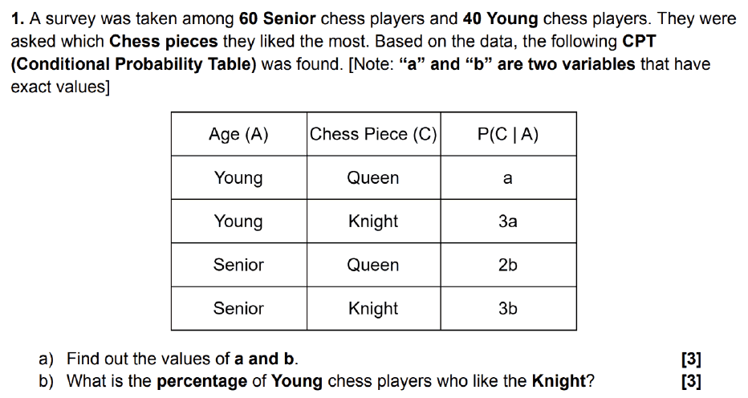
Each conditional distribution P(C | A = age) must sum to 1 over its values:
That is 0.75 × 40 = 30 of the 40 young players.
✓ A CPT row group sums to 1 for each value of the parent — not across the whole table. If a question instead asked for P(Young, Knight) out of all 100 players, it would be 0.4 × 0.75 = 0.3.
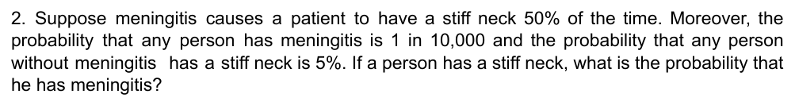
Given: \(P(+s \mid +m) = 0.5\), \(P(+m) = 0.0001\), so \(P(-m) = 0.9999\), and \(P(+s \mid -m) = 0.05\).
✓ The posterior stays tiny because the prior is tiny — 1 in 10,000 — even though meningitis causes stiff neck half the time.
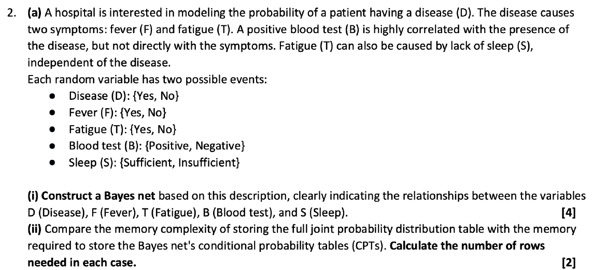
Joint factorization:
| Table | Parents | Rows |
|---|---|---|
| Full joint P(D,S,F,T,B) | — | 2⁵ = 32 |
| P(D) | none | 2 |
| P(S) | none | 2 |
| P(F | D) | D | 2 × 2 = 4 |
| P(B | D) | D | 4 |
| P(T | D, S) | D, S | 2 × 2 × 2 = 8 |
| All CPTs | 2 + 2 + 4 + 4 + 8 = 20 |
✓ Counting only the independent numbers (each row group sums to 1): full joint 2⁵ − 1 = 31 vs 1 + 1 + 2 + 2 + 4 = 10. The saving grows exponentially with more variables.
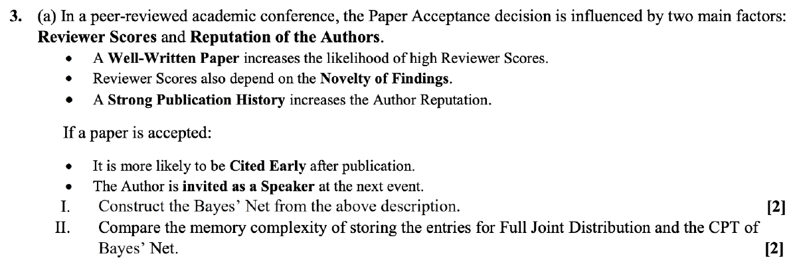
Assume all 8 variables are Boolean.
| Table | Rows |
|---|---|
| Full joint over 8 variables | 2⁸ = 256 |
| P(W), P(N), P(H) | 2 each = 6 |
| P(R | W, N) | 2³ = 8 |
| P(A | H) | 2² = 4 |
| P(P | R, A) | 2³ = 8 |
| P(C | P), P(I | P) | 4 each = 8 |
| All CPTs | 6 + 8 + 4 + 8 + 8 = 34 |
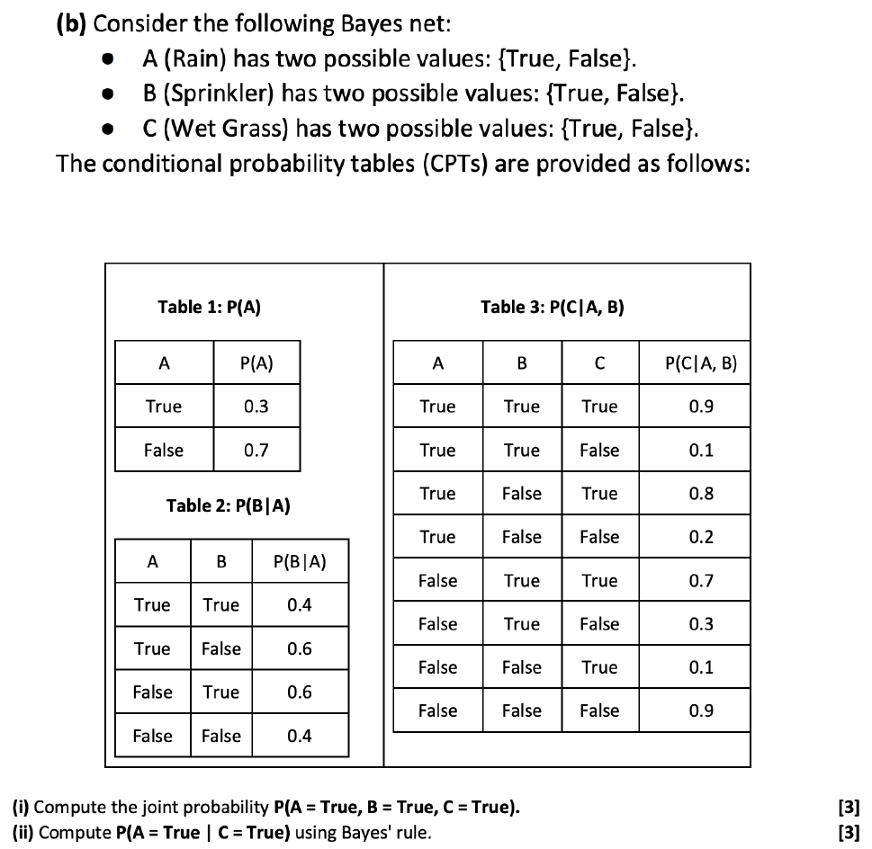
Structure: A → B, and A, B → C, so
Sum out B to get \(P(+c \mid a)\):
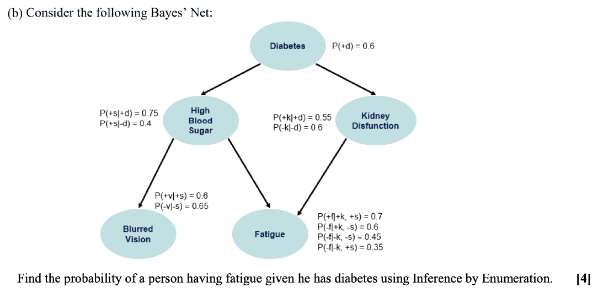
Structure: D → S (high blood sugar), D → K (kidney), S → V (blurred vision), S, K → F (fatigue). Some CPT entries are given as negatives, so take complements:
| Given | Needed | Value |
|---|---|---|
| P(+s | +d) = 0.75 | P(−s | +d) | 0.25 |
| P(+k | +d) = 0.55 | P(−k | +d) | 0.45 |
| P(+f | +k, +s) = 0.7 | P(+f | +k, +s) | 0.70 |
| P(−f | +k, −s) = 0.6 | P(+f | +k, −s) | 1 − 0.6 = 0.40 |
| P(−f | −k, −s) = 0.45 | P(+f | −k, −s) | 1 − 0.45 = 0.55 |
| P(−f | −k, +s) = 0.35 | P(+f | −k, +s) | 1 − 0.35 = 0.65 |
\(P(+d)\) cancels, and \(\sum_v P(v \mid s) = 1\) (blurred vision is not on the path to the query), so:
| s | k | P(s | +d) | P(k | +d) | P(+f | s, k) | Product |
|---|---|---|---|---|---|
| +s | +k | 0.75 | 0.55 | 0.70 | 0.288750 |
| +s | −k | 0.75 | 0.45 | 0.65 | 0.219375 |
| −s | +k | 0.25 | 0.55 | 0.40 | 0.055000 |
| −s | −k | 0.25 | 0.45 | 0.55 | 0.061875 |
| Sum | 0.625 |
✓ Same answer the long way: P(+f, +d) = 0.6 × 0.625 = 0.375, and 0.375 / P(+d) = 0.375 / 0.6 = 0.625. Also P(−f | +d) = 0.375, and the two add to 1.
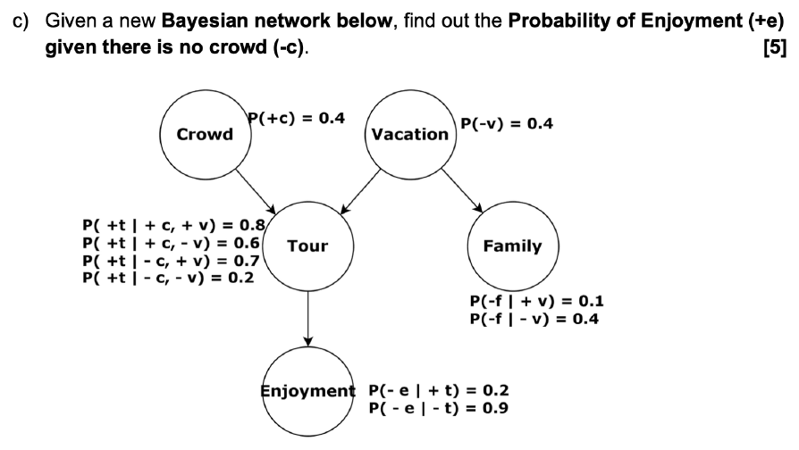
Structure: C → T ← V, V → Family, T → E. Complements: \(P(+v) = 0.6\), \(P(+e \mid +t) = 0.8\), \(P(+e \mid -t) = 0.1\). Family is not on a path to E given the query, so it sums out to 1.
| v | t | P(v) | P(t | −c, v) | P(+e | t) | Product |
|---|---|---|---|---|---|
| +v | +t | 0.6 | 0.7 | 0.8 | 0.336 |
| +v | −t | 0.6 | 0.3 | 0.1 | 0.018 |
| −v | +t | 0.4 | 0.2 | 0.8 | 0.064 |
| −v | −t | 0.4 | 0.8 | 0.1 | 0.032 |
| Sum | 0.450 |
Equivalently, in two steps:
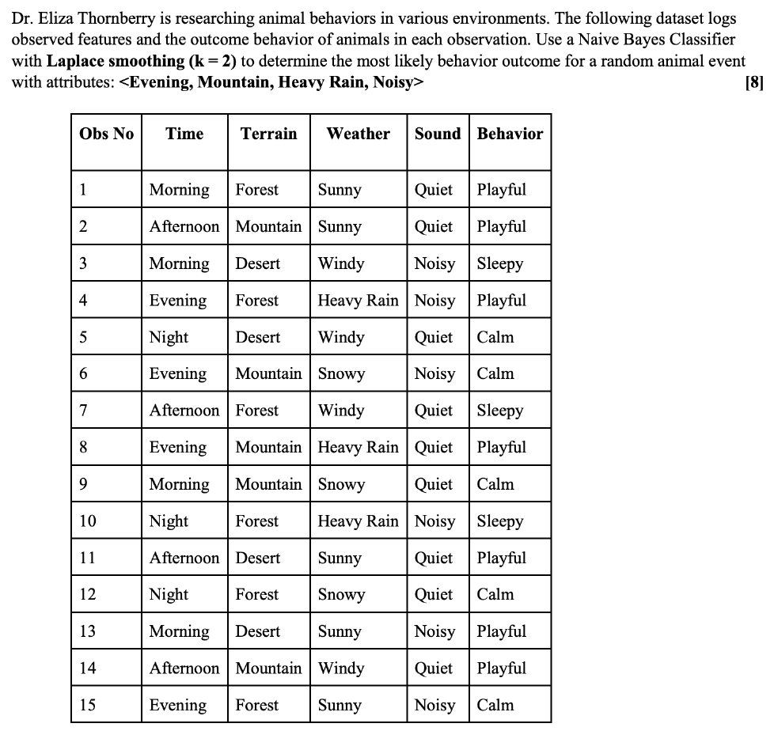
Classes: Playful 7, Sleepy 3, Calm 5 (N = 15). Number of values: Time |X| = 4, Terrain 3, Weather 4, Sound 2, Behaviour 3.
| Term | Playful (7) | Sleepy (3) | Calm (5) |
|---|---|---|---|
| Prior | (7+2)/21 = 9/21 | (3+2)/21 = 5/21 | (5+2)/21 = 7/21 |
| Time = Evening (|X|=4) | (2+2)/(7+8) = 4/15 | (0+2)/(3+8) = 2/11 | (2+2)/(5+8) = 4/13 |
| Terrain = Mountain (|X|=3) | (3+2)/(7+6) = 5/13 | (0+2)/(3+6) = 2/9 | (2+2)/(5+6) = 4/11 |
| Weather = Heavy Rain (|X|=4) | (2+2)/(7+8) = 4/15 | (1+2)/(3+8) = 3/11 | (0+2)/(5+8) = 2/13 |
| Sound = Noisy (|X|=2) | (2+2)/(7+4) = 4/11 | (2+2)/(3+4) = 4/7 | (2+2)/(5+4) = 4/9 |
| Product | 0.004262 | 0.001499 | 0.002550 |
| Normalized | 0.513 | 0.180 | 0.307 |
✓ The raw counts c(x, y) come from the table: e.g. Evening appears in 2 of the 7 Playful rows (#4, #8), and Heavy Rain never appears with Calm — smoothing turns that 0 into 2/13.
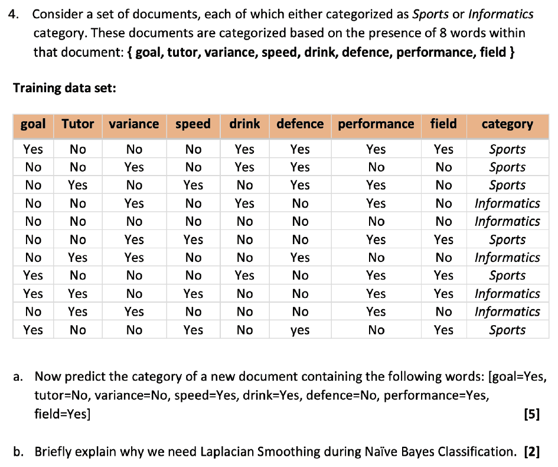
Sports: 6 documents, Informatics: 5 (N = 11). Count how often each query value appears within each class:
| Word = value | Sports (6) | Informatics (5) |
|---|---|---|
| Prior | 6/11 | 5/11 |
| goal = Yes | 3/6 | 1/5 |
| tutor = No | 5/6 | 2/5 |
| variance = No | 4/6 | 2/5 |
| speed = Yes | 3/6 | 1/5 |
| drink = Yes | 3/6 | 1/5 |
| defence = No | 2/6 | 4/5 |
| performance = Yes | 4/6 | 3/5 |
| field = Yes | 4/6 | 1/5 |
| Product | 0.005612 | 0.0000559 |
| Normalized | 0.990 | 0.010 |
No count is zero here, so plain counts work. (With Laplace k = 1 the answer is still Sports, ≈ 95%.)
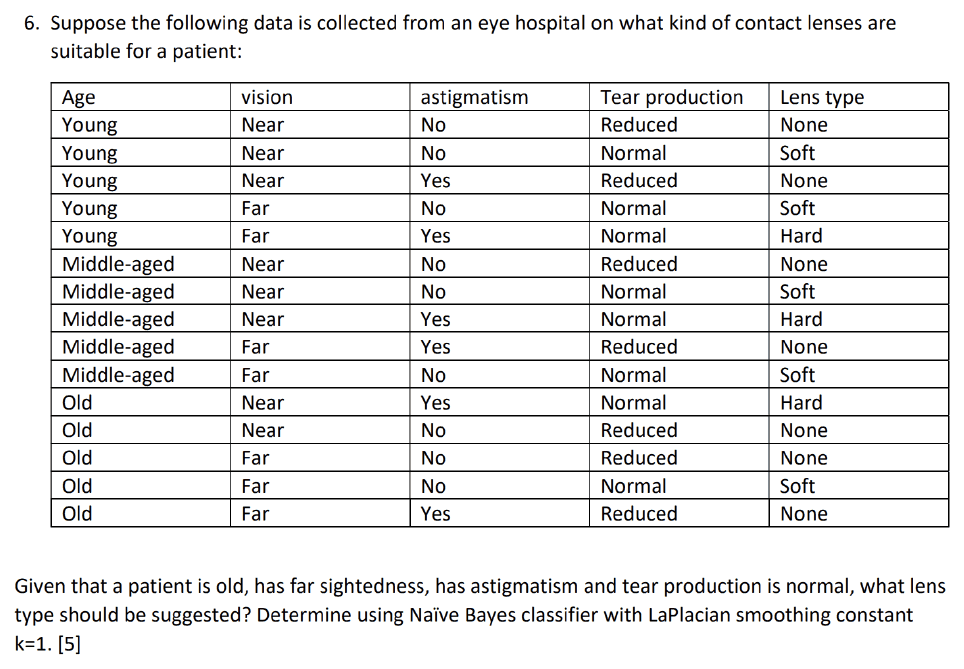
Classes: None 7, Soft 5, Hard 3 (N = 15). |Age| = 3, |Vision| = 2, |Astigmatism| = 2, |Tear| = 2, |Lens| = 3.
| Term | None (7) | Soft (5) | Hard (3) |
|---|---|---|---|
| Prior (c+1)/(15+3) | 8/18 | 6/18 | 4/18 |
| Age = Old | (3+1)/(7+3) = 4/10 | (1+1)/(5+3) = 2/8 | (1+1)/(3+3) = 2/6 |
| Vision = Far | (3+1)/(7+2) = 4/9 | (3+1)/(5+2) = 4/7 | (1+1)/(3+2) = 2/5 |
| Astigmatism = Yes | (3+1)/(7+2) = 4/9 | (0+1)/(5+2) = 1/7 | (3+1)/(3+2) = 4/5 |
| Tear = Normal | (0+1)/(7+2) = 1/9 | (5+1)/(5+2) = 6/7 | (3+1)/(3+2) = 4/5 |
| Product | 0.003902 | 0.005831 | 0.018963 |
| Normalized | 0.136 | 0.203 | 0.661 |
✓ Without smoothing, None (no Normal-tear rows) and Soft (no astigmatism rows) would both score exactly 0 — this question is a good example of why smoothing is needed.
Formulas. Entropy \(H(S) = -\sum_i p_i \log_2 p_i\). Information gain \[\text{Gain}(S, A) = H(S) - \sum_v \frac{|S_v|}{|S|} H(S_v)\] The attribute with the highest gain goes at the root. Useful values: \(\log_2\frac13 = -1.585\), \(\log_2\frac23 = -0.585\), \(\log_2\frac14 = -2\), \(\log_2\frac34 = -0.415\), \(\log_2\frac15 = -2.322\), \(\log_2\frac25 = -1.322\), \(\log_2\frac35 = -0.737\), \(\log_2\frac45 = -0.322\).
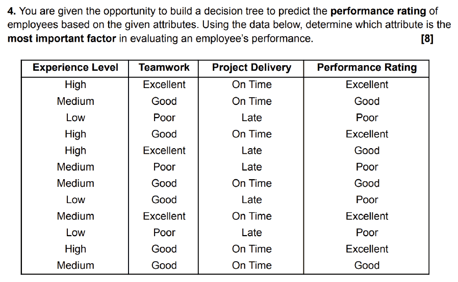
Classes: Excellent 4, Good 4, Poor 4 of 12.
| Value | Rows | Excellent / Good / Poor | Entropy |
|---|---|---|---|
| High | 4 | 3 / 1 / 0 | 0.811 |
| Medium | 5 | 1 / 3 / 1 | 1.371 |
| Low | 3 | 0 / 0 / 3 | 0 |
| Value | Rows | Excellent / Good / Poor | Entropy |
|---|---|---|---|
| Excellent | 3 | 2 / 1 / 0 | 0.918 |
| Good | 6 | 2 / 3 / 1 | 1.459 |
| Poor | 3 | 0 / 0 / 3 | 0 |
| Value | Rows | Excellent / Good / Poor | Entropy |
|---|---|---|---|
| On Time | 7 | 4 / 3 / 0 | 0.985 |
| Late | 5 | 0 / 1 / 4 | 0.722 |
✓ Sample entropy: Medium = −(1/5)log₂(1/5) − (3/5)log₂(3/5) − (1/5)log₂(1/5) = 0.464 + 0.442 + 0.464 = 1.371.
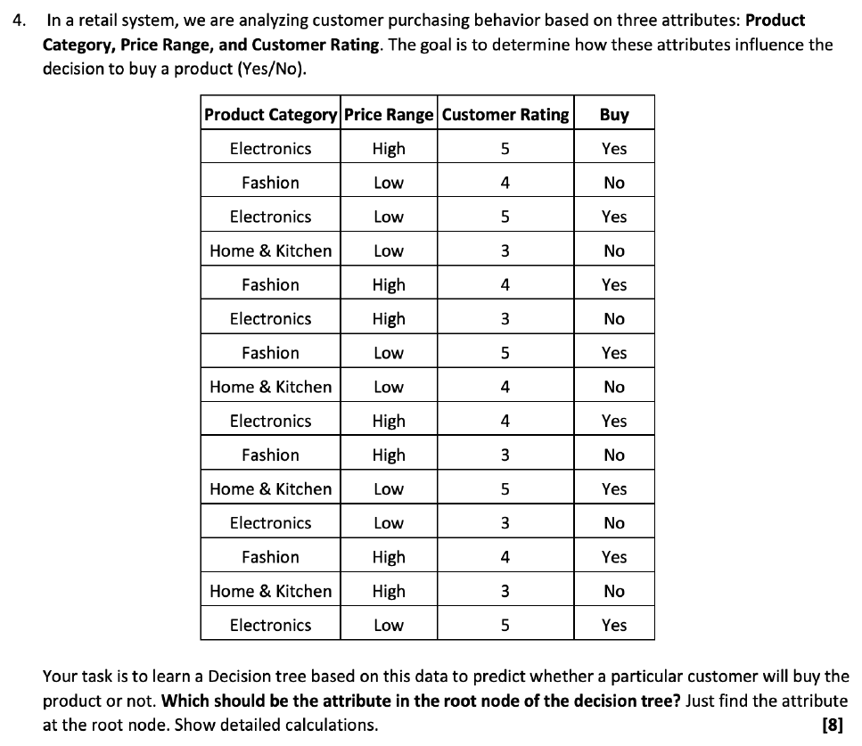
Buy: Yes 8, No 7 of 15.
| Value | Rows | Yes / No | Entropy |
|---|---|---|---|
| Electronics | 6 | 4 / 2 | 0.918 |
| Fashion | 5 | 3 / 2 | 0.971 |
| Home & Kitchen | 4 | 1 / 3 | 0.811 |
| Value | Rows | Yes / No | Entropy |
|---|---|---|---|
| High | 7 | 4 / 3 | 0.985 |
| Low | 8 | 4 / 4 | 1.000 |
| Value | Rows | Yes / No | Entropy |
|---|---|---|---|
| 3 | 5 | 0 / 5 | 0 |
| 4 | 5 | 3 / 2 | 0.971 |
| 5 | 5 | 5 / 0 | 0 |
✓ Rating 3 is always No and rating 5 is always Yes — two pure branches, which is why its gain is so large.
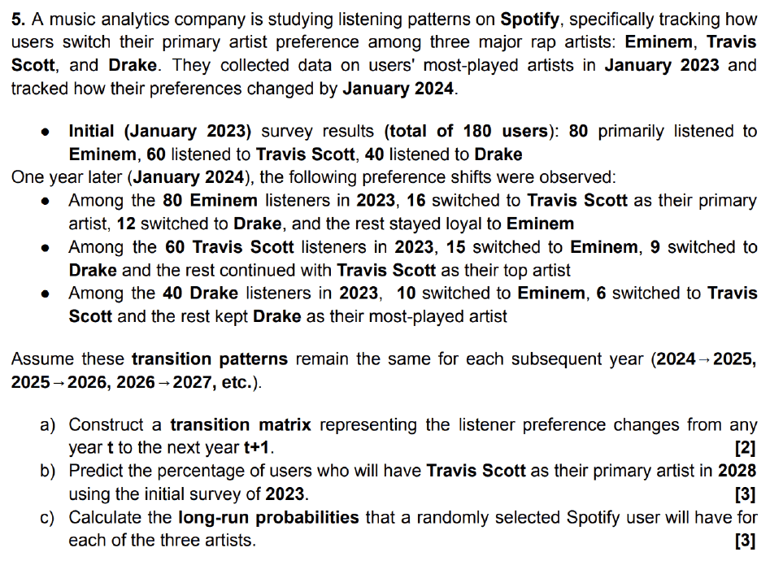
| From \ To | Eminem | Travis | Drake |
|---|---|---|---|
| Eminem | 52/80 = 0.65 | 16/80 = 0.20 | 12/80 = 0.15 |
| Travis | 15/60 = 0.25 | 36/60 = 0.60 | 9/60 = 0.15 |
| Drake | 10/40 = 0.25 | 6/40 = 0.15 | 24/40 = 0.60 |
Every row sums to 1.
Start from 2023 = ⟨E, T, D⟩ = ⟨80, 60, 40⟩ / 180 and apply the mini-forward step five times (2024 … 2028):
| Year | Eminem | Travis | Drake |
|---|---|---|---|
| 2023 | 0.4444 | 0.3333 | 0.2222 |
| 2024 | 0.4278 | 0.3222 | 0.2500 |
| 2025 | 0.4211 | 0.3164 | 0.2625 |
| 2026 | 0.4184 | 0.3134 | 0.2681 |
| 2027 | 0.4174 | 0.3120 | 0.2707 |
| 2028 | 0.4170 | 0.3113 | 0.2718 |
✓ Working in user counts is easier on paper: 2024 = ⟨77, 58, 45⟩ exactly (e.g. Travis 80(0.2) + 60(0.6) + 40(0.15) = 58); divide by 180 at the end.
Balance equations, using the fact that each column has a repeated entry:
✓ Check one more step leaves it unchanged: Travis = (5/12)(0.2) + (41/132)(0.6) + (3/11)(0.15) = 0.0833 + 0.1864 + 0.0409 = 0.3106 ✓. The 2028 values are already very close to these.